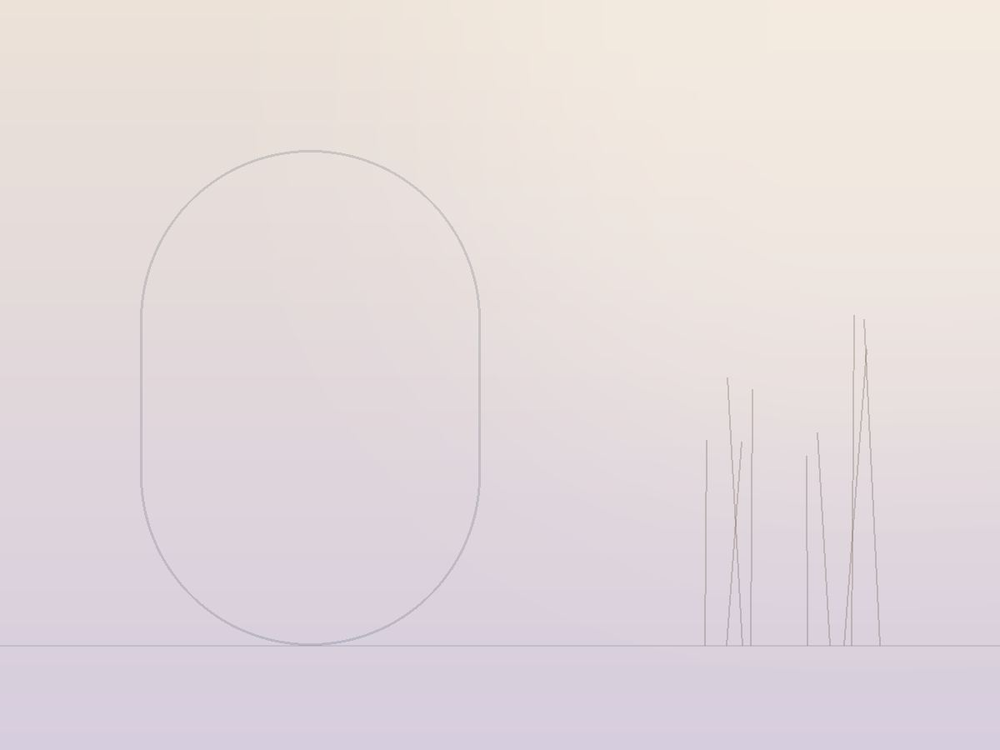
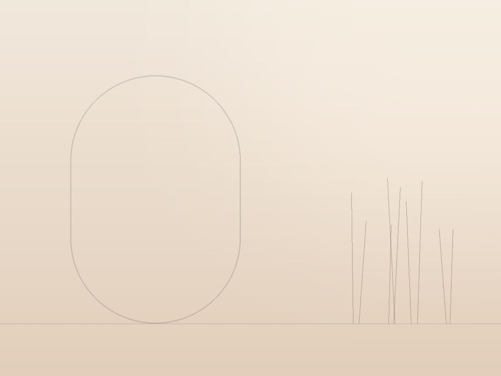

小兒科
照護新生兒、兒童及青少年的常見疾病與健康需求，並提供家長清楚的衛教說明。

本一診所位於新北市蘆洲區，由醫學中心講師級資深小兒專科主治醫師林本一院長看診，並具感染症專科資格。
從孩子的成長照護到全家人的日常健康，我們以耐心傾聽、清楚說明為原則，陪伴每一個家庭安心就醫。

照護新生兒、兒童及青少年的常見疾病與健康需求，並提供家長清楚的衛教說明。
針對發燒、呼吸道感染等各類感染症，提供評估、診斷與治療建議。
診治鼻塞、流鼻水、喉嚨痛、耳朵不適等常見耳鼻喉症狀。
提供高血壓、糖尿病、甲狀腺機能亢進、痛風等成人慢性疾病的長期追蹤與照護。
| 星期 | 上午 | 下午 | 晚上 |
|---|---|---|---|
| 星期一 | 08:30–12:00 | 15:00–18:00 | 18:30–20:30 |
| 星期二 | 08:30–12:00 | 15:00–18:00 | 18:30–20:30 |
| 星期三 | 休診 | 休診 | 休診 |
| 星期四 | 08:30–12:00 | 15:00–18:00 | 18:30–20:30 |
| 星期五 | 08:30–12:00 | 15:00–18:00 | 18:30–20:30 |
| 星期六 | 08:30–12:00 | 15:00–18:00 | 休診 |
| 星期日 | 08:30–12:00 | 15:00–18:00 | 休診 |
每週三全日休診，週六、週日無夜間門診。
如遇國定假日或臨時異動，將公告於 Facebook 粉絲專頁，亦歡迎來電詢問。